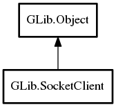

SocketClient
Object Hierarchy:

Description:
public class SocketClient :
Object
SocketClient is a lightweight high-level utility class for connecting to a network host using a connection
oriented socket type.
You create a SocketClient object, set any options you want, and then call a sync or async connect operation,
which returns a SocketConnection subclass on success.
The type of the SocketConnection object returned depends on the type of the
underlying socket that is in use. For instance, for a TCP/IP connection it will be a
TcpConnection.
As SocketClient is a lightweight object, you don't need to cache it. You can just create a new one any time
you need one.
Content:
Properties:
Creation methods:
Methods:
- public void add_application_proxy (string protocol)
Enable proxy protocols to be handled by the application.
- public SocketConnection connect (SocketConnectable connectable, Cancellable? cancellable = null) throws Error
Tries to resolve the connectable and make a network
connection to it.
- public async SocketConnection connect_async (SocketConnectable connectable, Cancellable? cancellable = null) throws Error
This is the asynchronous version of
connect.
- public SocketConnection connect_to_host (string host_and_port, uint16 default_port, Cancellable? cancellable = null) throws Error
This is a helper function for
connect.
- public async SocketConnection connect_to_host_async (string host_and_port, uint16 default_port, Cancellable? cancellable = null) throws Error
- public SocketConnection connect_to_service (string domain, string service, Cancellable? cancellable = null) throws Error
Attempts to create a TCP connection to a service.
- public async SocketConnection connect_to_service_async (string domain, string service, Cancellable? cancellable = null) throws Error
- public SocketConnection connect_to_uri (string uri, uint16 default_port, Cancellable? cancellable = null) throws Error
This is a helper function for
connect.
- public async SocketConnection connect_to_uri_async (string uri, uint16 default_port, Cancellable? cancellable = null) throws Error
- public bool get_enable_proxy ()
- public SocketFamily get_family ()
Gets the socket family of the socket client.
- public weak SocketAddress get_local_address ()
Gets the local address of the socket client.
- public SocketProtocol get_protocol ()
Gets the protocol name type of the socket client.
- public weak ProxyResolver get_proxy_resolver ()
- public SocketType get_socket_type ()
Gets the socket type of the socket client.
- public uint get_timeout ()
Gets the I/O timeout time for sockets created by
this.
- public bool get_tls ()
Gets whether this creates TLS
connections.
- public TlsCertificateFlags get_tls_validation_flags ()
Gets the TLS validation flags used creating TLS connections via
this.
- public void set_enable_proxy (bool enable)
Sets whether or not this attempts to
make connections via a proxy server.
- public void set_family (SocketFamily family)
Sets the socket family of the socket client.
- public void set_local_address (SocketAddress? address)
Sets the local address of the socket client.
- public void set_protocol (SocketProtocol protocol)
Sets the protocol of the socket client.
- public void set_proxy_resolver (ProxyResolver? proxy_resolver)
- public void set_socket_type (SocketType type)
Sets the socket type of the socket client.
- public void set_timeout (uint timeout)
Sets the I/O timeout for sockets created by
this.
- public void set_tls (bool tls)
Sets whether this creates TLS (aka
SSL) connections.
- public void set_tls_validation_flags (TlsCertificateFlags flags)
Sets the TLS validation flags used when creating TLS connections via
this.
Signals:
Inherited Members:
All known members inherited from class GLib.Object